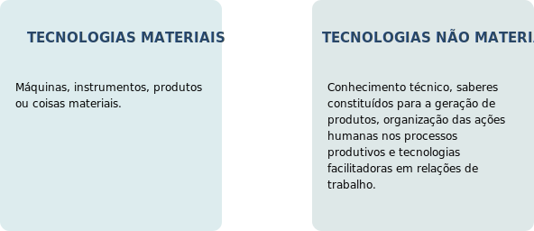

TÓPICO 3
INSTRUMENTOS DE GESTÃO PARA APRIMORAMENTO DAS PRÁTICAS DE GERENCIAMENTO DOS SERVIÇOS DA ESF
TÓPICO 3
INSTRUMENTOS DE GESTÃO PARA APRIMORAMENTO DAS PRÁTICAS DE GERENCIAMENTO DOS SERVIÇOS DA ESF
As tecnologias no processo de trabalho em saúde podem ser definidas como:
Nesse referencial, as tecnologias materiais e as não materiais são consideradas instrumentos de trabalho (GONÇALVES, 1994; LORENZETTI et al., 2012).